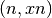
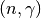

2. Cross Section Representation¶
The data governing the interaction of neutrons with various nuclei are represented using the ACE format which is used by OpenMC, MCNP, and Serpent. ACE-format data can be generated from ENDF data with the NJOY nuclear data processing system. The use of a standard cross section format allows for a direct comparison of OpenMC with other codes since the same cross section libraries can be used.
The ACE format contains continuous-energy cross sections for the following types
of reactions: elastic scattering, fission (or first-chance fission,
second-chance fission, etc.), inelastic scattering, ,
, and various other absorption reactions. For those reactions
with one or more neutrons in the exit channel, secondary angle and energy
distributions may be provided. In addition, fissionable nuclides have total,
prompt, and/or delayed  as a function of energy and neutron precursor
distributions. Many nuclides also have probability tables to be used for
accurate treatment of self-shielding in the unresolved resonance range. For
bound scatterers, separate tables with scattering law
data can be used.
as a function of energy and neutron precursor
distributions. Many nuclides also have probability tables to be used for
accurate treatment of self-shielding in the unresolved resonance range. For
bound scatterers, separate tables with scattering law
data can be used.